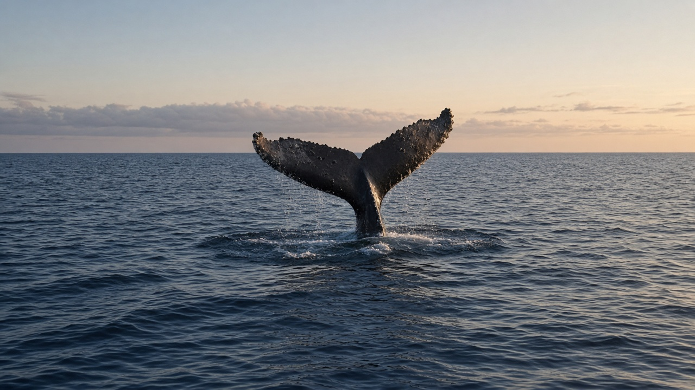
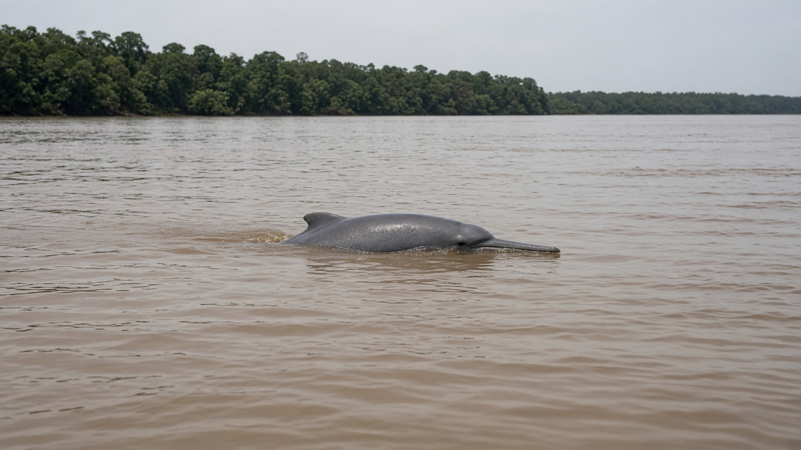
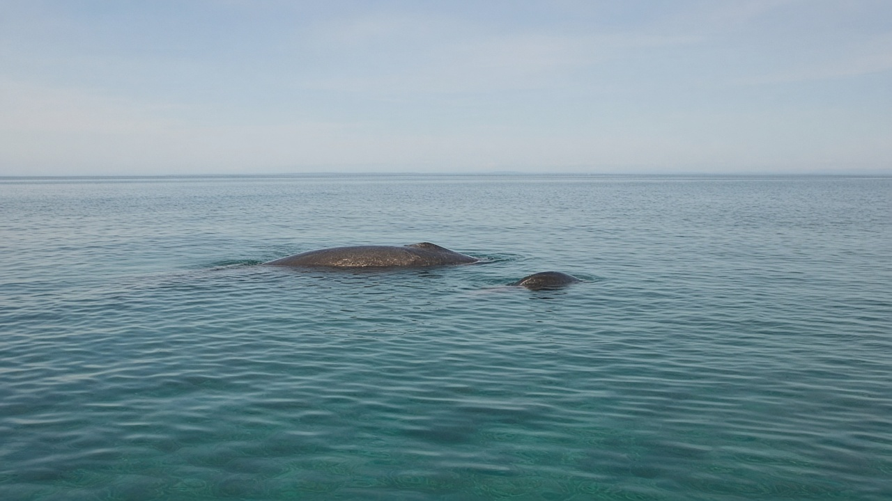

Whales, Dolphins, and Marine Mammals
Published on August 20, 2026

Marine mammals—cetaceans, pinnipeds, sirenians, sea otters, and polar bears—are warm-blooded air breathers that returned to the sea and reshaped ocean food webs. Baleen whales filter krill and small fish on long migrations between polar feeding grounds and tropical calving waters; toothed whales and dolphins hunt with echolocation, using clicks and whistles that can travel kilometres. Seals and sea lions haul out to breed, while dugongs and manatees graze seagrass in shallow bays. Their large bodies store fat, move nutrients across ocean basins, and, when they die and sink, deliver pulses of carbon and iron to the deep seafloor.
These animals are sentinels of ocean change. Ship strikes, entanglement in fishing gear, naval and seismic noise, and declining prey have replaced commercial whaling as the main threats in many regions. The Ganges river dolphin and Irrawaddy dolphin show that some cetaceans live in muddy rivers and estuaries linked to the Bay of Bengal, so inland water quality is a marine-mammal issue. Climate shifts move ice edges and fish stocks, forcing whales to travel farther for the same meal. Contaminants such as persistent organic pollutants concentrate up the food chain and appear in blubber, affecting reproduction even in remote waters.
Conservation works when it matches the scale of migration. Seasonal speed limits in shipping lanes, acoustic buffer zones around calving grounds, and gear modifications that reduce entanglement have measurable effects on survival. Photo-identification, satellite tags, and passive acoustic networks turn scattered sightings into population maps that managers can use. For students far from the coast, marine mammals are a reminder that sound, plastic, and river chemistry travel; a quieter, cleaner, better-managed ocean is as much a freshwater and shipping policy as a wildlife campaign.

समुद्री स्तनधारी—तिमिङ्गिला वर्ग, पिनिपेड, साइरेनियन, समुद्री ओटर र ध्रुवीय भालु—न्यानो रगतका हावा श्वास लिने जनावर हुन् जो समुद्र फर्किए र महासागरीय खाद्य जाल पुनर्आकार दिए। ह्वेलबोन तिमिङ्गिलाले ध्रुवीय खुवाइ क्षेत्र र उष्ण बच्छा जन्माउने पानीबीच लामो बसाइँसराइमा क्रिल र साना माछा छान्छन्; दाँत भएका तिमिङ्गिला र डल्फिनले किलोमिटरसम्म पुग्ने क्लिक र सिट्टी प्रयोग गरी प्रतिध्वनि स्थान निर्धारणले शिकार गर्छन्। सिल र समुद्री सिंह प्रजननका लागि बाहिर निस्कन्छन् भने ड्युगङ र म्यानाटी उथले खाडीमा समुद्री घाँस चर्छन्। तिनका ठूला शरीरले बोसो भण्डारण गर्छन्, बेसिनपार पोषक सार्छन् र मरेर डुब्दा गहिरो तलमा कार्बन र फलामको स्पन्दन पुर्याउँछन्।
यी जनावर महासागर परिवर्तनका संवेदनशील संकेत हुन्। धेरै क्षेत्रमा व्यापारिक तिमिङ्गिला शिकारको ठाउँ जहाज ठक्कर, माछा मार्ने जालमा अल्झिनु, नौसेना तथा भूकम्पीय हल्ला र घट्दो शिकारले मुख्य खतरा लिएका छन्। गंगा नदी डल्फिन र इरावती डल्फिनले केही तिमिङ्गिला वर्ग बंगालको खाडीसँग जोडिएका हिलो नदी र मुहानमा बस्छन् देखाउँछन्, त्यसैले भित्री पानी गुणस्तर समुद्री-स्तनधारी मुद्दा हो। जलवायु सर्दाले बरफ किनारा र माछा स्टक सार्छ, तिमिङ्गिलालाई उही खानाका लागि अझ टाढा यात्रा गर्न बाध्य पार्छ। दीर्घजीवी जैविक प्रदूषक जस्ता दूषित पदार्थ खाद्य शृङ्खलामाथि केन्द्रित भई बोसोमा देखिन्छन् र टाढा पानीमा पनि प्रजनन प्रभावित पार्छन्।
संरक्षण तब काम गर्छ जब यो बसाइँसराइको स्तरसँग मिल्छ। ढुवानी लेनमा मौसमी गति सीमा, बच्छा क्षेत्र वरपर ध्वनि मध्यवर्ती क्षेत्र र अल्झन घटाउने जाल परिमार्जनले बाँच्ने दरमा नाप्न सकिने प्रभाव पारेका छन्। फोटो पहिचान, उपग्रह ट्याग र निष्क्रिय ध्वनि सञ्जालले छरिएका देखाइलाई व्यवस्थापकले प्रयोग गर्ने जनसंख्या नक्सा बनाउँछन्। तटबाट टाढाका विद्यार्थीका लागि समुद्री स्तनधारी सम्झना हुन् कि आवाज, प्लास्टिक र नदी रसायन यात्रा गर्छन्; शान्त, सफा, राम्रो व्यवस्थित महासागर वन्यजन्तु अभियान मात्र होइन ताजा पानी र ढुवानी नीति पनि हो।

समुद्री स्तनधारी—तिमिंगिल वर्ग, पिनिपेड, साइरेनियन, समुद्री ओटर और ध्रुवीय भालू—गर्म रक्त वाले वायु श्वास लेने वाले प्राणी हैं जो समुद्र लौटे और महासागरीय खाद्य जाल पुनर्आकार दिए। वेलबोन तिमिंगिल ध्रुवीय भोजन क्षेत्र और उष्ण बछड़ा जन्म जल के बीच लंबी प्रवास पर क्रिल और छोटी मछली छानते हैं; दाँत वाले तिमिंगिल और डॉल्फ़िन किलोमीटर तक पहुँचने वाले क्लिक और सीटी से प्रतिध्वनि स्थान निर्धारण कर शिकार करते हैं। सील और समुद्री सिंह प्रजनन के लिए बाहर आते हैं जबकि ड्यूगंग और मैनेटी उथली खाड़ियों में समुद्री घास चरते हैं। उनके बड़े शरीर वसा संचित करते, बेसिन पार पोषक ले जाते और मरकर डूबने पर गहरे तल पर कार्बन और लोहे की स्पंदन पहुँचाते हैं।
ये प्राणी महासागर परिवर्तन के संवेदनशील संकेत हैं। कई क्षेत्रों में व्यापारिक तिमिंगिल शिकार की जगह जहाज टक्कर, मछली पकड़ने के जाल में उलझना, नौसेना तथा भूकंपीय शोर और घटता शिकार मुख्य खतरे बन गए हैं। गंगा नदी डॉल्फ़िन और इरावती डॉल्फ़िन दिखाती हैं कि कुछ तिमिंगिल वर्ग बंगाल की खाड़ी से जुड़े कीचड़ नदियों और मुहानों में रहते हैं, इसलिए भीतरी जल गुणवत्ता समुद्री-स्तनधारी मुद्दा है। जलवायु खिसकाव बर्फ किनारे और मछली स्टॉक सरकाता है, तिमिंगिलों को उसी भोजन के लिए और दूर यात्रा करने को बाध्य करता है। दीर्घजीवी जैविक प्रदूषक जैसे संदूषक खाद्य शृंखला ऊपर केंद्रित होकर वसा में दिखते हैं और दूर जल में भी प्रजनन प्रभावित करते हैं।
संरक्षण तब काम करता है जब यह प्रवास के पैमाने से मेल खाए। नौवहन लेन में मौसमी गति सीमा, बछड़ा क्षेत्र के आसपास ध्वनि मध्यवर्ती क्षेत्र और उलझन घटाने वाले जाल संशोधन जीवित रहने की दर पर मापने योग्य प्रभाव डालते हैं। फोटो पहचान, उपग्रह टैग और निष्क्रिय ध्वनि नेटवर्क बिखरी दिखाई को प्रबंधकों के काम आने वाले जनसंख्या नक्शों में बदलते हैं। तट से दूर छात्रों के लिए समुद्री स्तनधारी याद दिलाते हैं कि ध्वनि, प्लास्टिक और नदी रसायन यात्रा करते हैं; शांत, स्वच्छ, बेहतर प्रबंधित महासागर वन्यजीव अभियान ही नहीं मीठा जल और नौवहन नीति भी है।